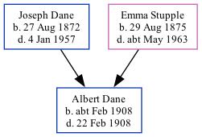

Albert Dane cFeb 1908 - 1908
[ Home ] | [ Calendar ] | [ Surnames Index ] | [ Family History ]The child of Joseph Dane (a master mariner and licensed victualler) and Emma Stupple (a domestic general servant)Albert Dane, the second cousin twice-removed on the mother's side of Nigel Horne, was born in Faversham, Kent, England c. Feb 19081.
He died in Faversham on Feb 22, 19082.
Parents
- Joseph was born on Aug 27, 1872
- Emma Jane was born on Aug 29, 1875
Citations
- England & Wales births 1837-2006 - Findmypast
- England & Wales deaths 1837-2007 - Findmypast
Media
England & Wales births 1837-2006 - BMD/B/1908/1/AZ/000150/290
England & Wales deaths 1837-2007 - BMD/D/1908/1/AZ/000101/293
Family Tree
Generated by ged2site. Last updated on Nov 13, 2024